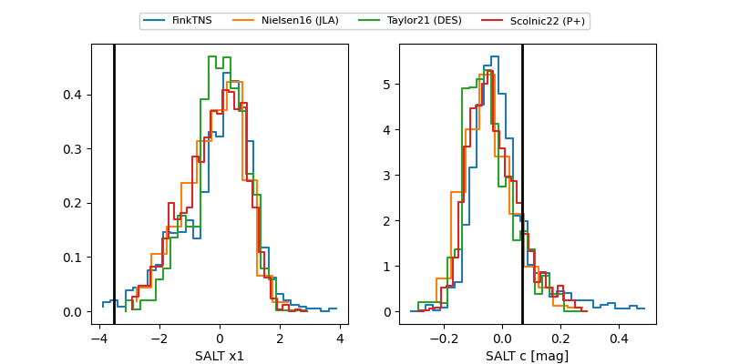

FINK: ZTF25abmxfcp
Lasair: ZTF25abmxfcp
ALeRCE: ZTF25abmxfcp
TNS: 2025xod
YSE: 2025xod
ZTF25abmxfcp (ztf,fink)
2025xod (tns,yse)
PS25hmy (panstarrs)
equatorial (ra, dec) = (353.0345,+12.16733)
galactic (l, b) = (94.2857,-46.24693)

last ztfg=20.40, ztfr=20.27
1 ztfg, 2 ztfr detections